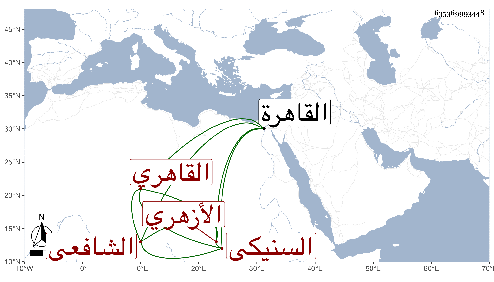

0902Sakhawi.DawLamic.ITO20230111-ara1.EIS1600.635369993448
Biography ID: 635369993448
168
علي نور الدين أبو الحسن السنيكي ثم القاهري الأزهري الشافعي . قدم القاهرة فقرأ القرآن وحضر دروس المناوي وغيره بل سمع على شيخنا رفيقا لبلديه الزين زكريا وعاش حتى أدرك ولايته فلم يحصل منه على طائل مع شدة فقره وضرره وانقطاعه . مات في ليلة الجمعة تاسع ربيع الآخر سنة ثمان وثمانين وقد قارب السبعين رحمه الله .
